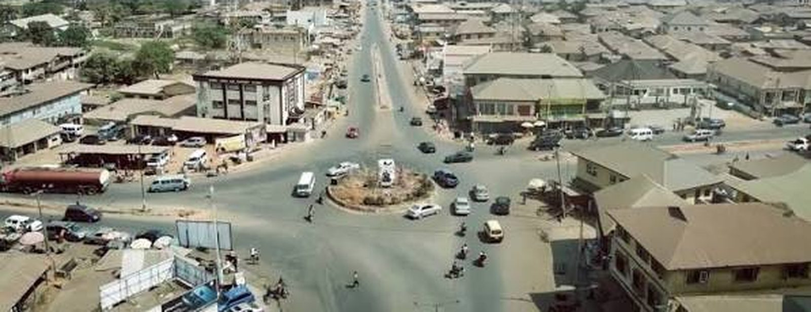

George Ogunlade
Executive ChairmanAlága Àgbà
 Federal Republic of NigeriaOrílẹ̀-èdè Olómìnira Àpapọ̀ Nàìjíríà · Oyo StateÌpínlẹ̀ Ọ̀yọ́
Federal Republic of NigeriaOrílẹ̀-èdè Olómìnira Àpapọ̀ Nàìjíríà · Oyo StateÌpínlẹ̀ Ọ̀yọ́
EmergencyPàjáwìrì: 112

Services, projects and information for every ward. Report a problem, find a school, read a bye-law or see how public money is used.Àwọn iṣẹ́, iṣẹ́ àkànṣe àti ìròyìn fún gbogbo wọ́ọ̀dù. Ròyìn ìṣòro, wá ilé-ìwé, ka òfin ìbílẹ̀ tàbí wo bí a ṣe ń lo owó gbogbo ènìyàn.
Ogbomoso town centre
Executive ChairmanAlága Àgbà
Vice ChairmanIgbákejì Alága
Leadership and departmentsÀwọn olórí àti ẹ̀ka Notices and tendersÌkéde
Schools, enrolment and learning support.Ilé-ìwé, ìforúkọsílẹ̀ àti ìrànwọ́ ẹ̀kọ́.
Go to EducationLọ sí Ẹ̀kọ́How projects are planned and delivered.Bí a ṣe ń gbèrò àti ṣe iṣẹ́ àkànṣe.
Go to projectsLọ sí iṣẹ́ àkànṣeDepartments, vacancies and placements.Àwọn ẹ̀ka, iṣẹ́ tó ṣí sílẹ̀ àti ìgbaniṣíṣẹ́.
Go to WorkforceLọ sí Òṣìṣẹ́Bye-laws and support for residents.Òfin ìbílẹ̀ àti ìrànwọ́ fún olùgbé.
Go to PoliciesLọ sí ÌlànàIntegrity, public information and safe reporting.Òtítọ́, ìròyìn gbogbo ènìyàn àti ìròyìn tó ní ààbò.
Go to EthicsLọ sí Ìwà ỌmọlúàbíRoads, drains, markets and health centres.Ọ̀nà, kòtò omi, ọjà àti ilé ìtọ́jú ìlera.
Go to InfrastructureLọ sí Àwọn Ohun AmáyédẹrùnReport issues and reach the council.Ròyìn ìṣòro kí o sì kàn sí ìjọba ìbílẹ̀.
Go to ReportsLọ sí Ìfisùn